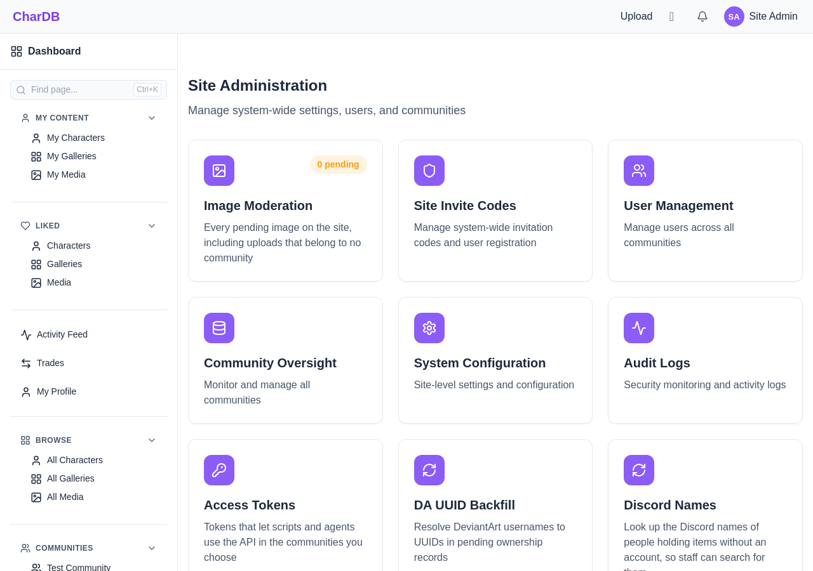
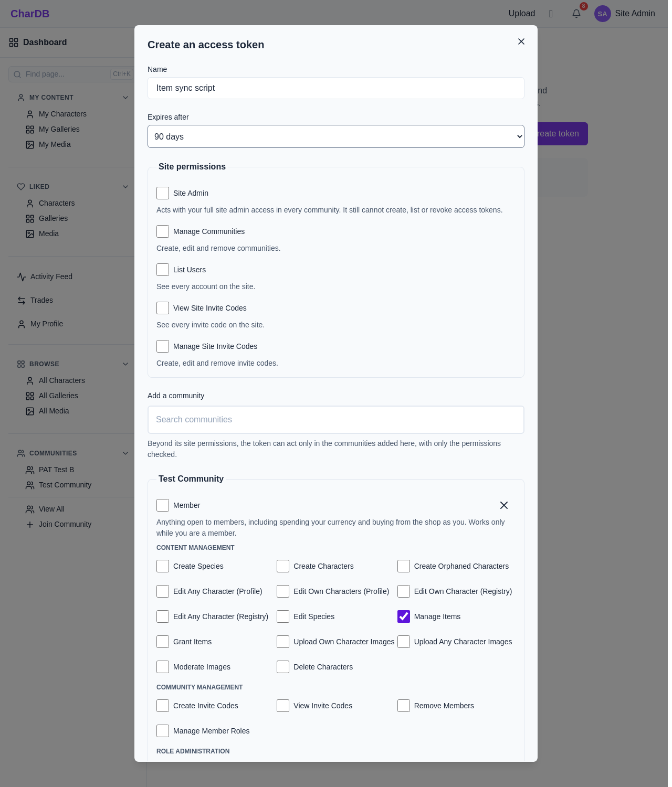
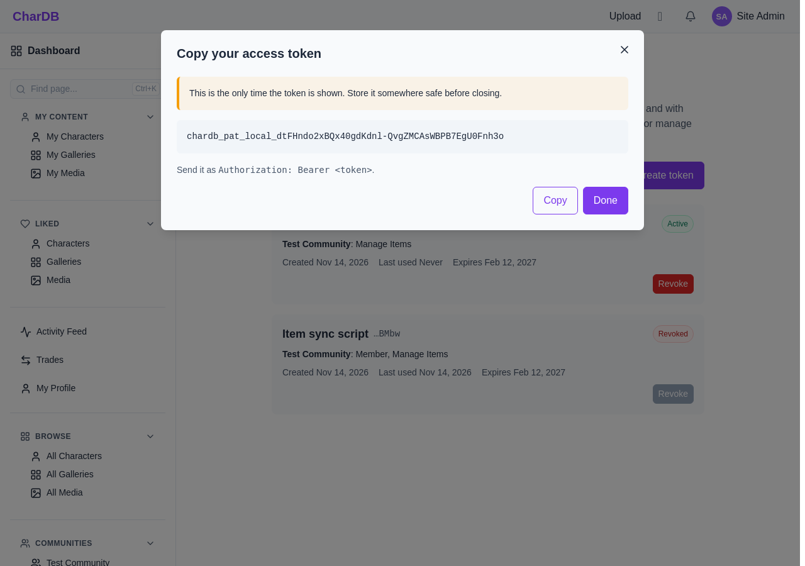
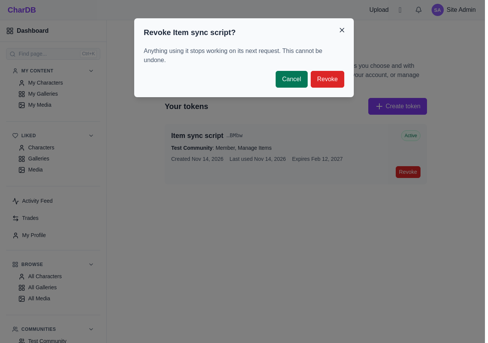
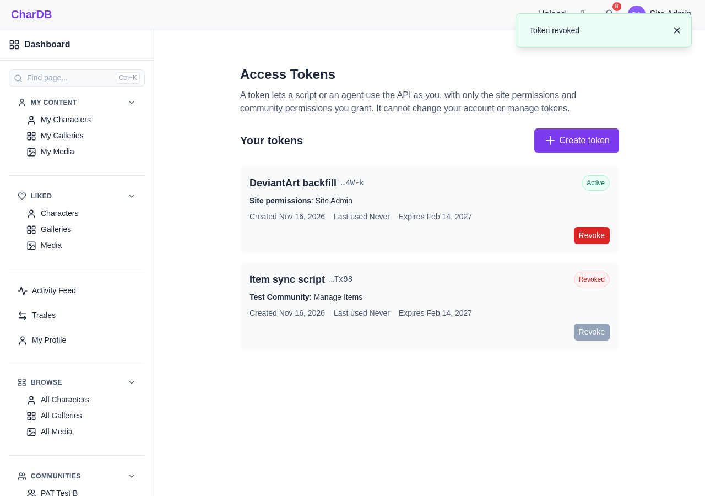
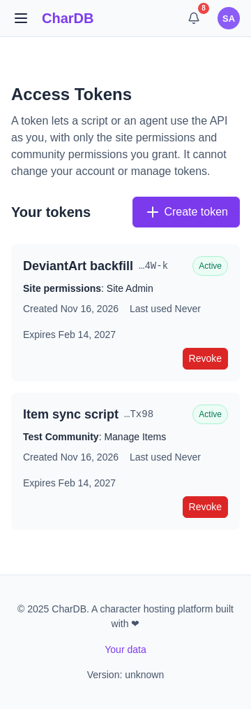

A credential for scripts and agents, narrower than your account
A script that syncs item types, or an agent that tidies a community's characters, needs to call the API as someone. Handing it a site admin's session would let it do anything on the site. An access token acts as you, but only in the communities you add to it and only with the permissions you check there.

/admin/access-tokens.
Name it after what will use it, pick how long it lasts (7, 30, 90 or 365 days), then add each community it may act in. Every community added gets its own checklist, all unchecked. Each permission is the same permission a role can hold.
Member lets it through anything open to the community's members. That includes spending your currency and buying from the shop as you, so leave it off unless the script needs it. It counts only in communities where you hold a role yourself, and stops counting if you leave.

The token is shown once, straight after it is made. CharDB keeps only a hash of it, so nobody can show it again later, admins included. Lose it and the fix is a new token.
Every token names the environment it was made in:
chardb_pat_prod_… on the live site,
chardb_pat_dev_… on the dev stack and
chardb_pat_local_… on a laptop. A token found in a log
or a paste says at a glance whether it opens production.

The script sends it the same way the site sends a session:
curl https://api.chardb.cc/graphql \
-H "Authorization: Bearer chardb_pat_prod_…" \
-H "Content-Type: application/json" \
-d '{"query":"{ me { username } }"}'
A token that has expired or been revoked gets an
UNAUTHENTICATED error on every request, rather than
being treated as signed out. One sent to the wrong environment is
told so: This access token belongs to another environment.
Each token shows where it may act, when it was made, when it was last used and when it expires. Revoke one the moment it might have leaked; whatever holds it is refused on its next request.
Removing someone's site admin status revokes all of their tokens at once. Making them an admin again brings none back.



In a checkout of the repo, yarn chardb makes requests
with a token. The token's prefix picks the API: a
chardb_pat_prod_ token goes to the live site, a local
one to the checkout's own backend.
$ pbpaste | yarn chardb auth add Stored the prod token $ yarn chardb whoami token Bank import (…x7Qa), expires 2026-12-15 user siteadmin api https://api.chardb.cc/graphql (prod) cloverse Cloverse canGrantItems
Scripts set CHARDB_TOKEN and pass --json.
The exit code tells failures apart: 2 for a mistake in the command,
3 when the token is refused, 4 when a lookup finds nothing, 1 for
anything else.
A command that changes production asks first. Without a terminal to
ask on, it needs --yes.
yarn chardb gql sends any GraphQL document, for what
has no command of its own. The full reference is in
apps/cli/README.md.